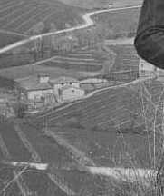

Proseguendo dopo Quercegrossa sulla strada principale in direzione Castellina, al termine di un chilometro e mezzo di prudente discesa che si sviluppa con tornanti e pericolose curve sulla costa della collina di Quercegrossa, si entra nella spaziosa valle del torrente Staggia e, superato il ponte, subito a sinistra la strada che mena verso Lornano e a destra si vede, con a ridosso il poggio del Casalino, l’antico mulino di Quercegrossa che si presenta con aspetto di casa colonica della quale appaiono subito evidenti i numerosi rimaneggiamenti e aggiunte del fabbricato.
Il Mulino da una vecchia foto del 1930 ca.
A destra si intravede la gora e in alto la strada statale sterrata.
Non essendo citato tra le Possessioni del 1319 nel comune di Quercegrossa nessun mulino, rimane difficile ipotizzare la nascita di un impianto ad acqua per la molitura di grani che sfruttava l’impeto delle acque del fiume Staggia, a quei tempi di discreta portata, che venne a sostituire la forza animale. Tuttavia, vista la concomitante diffusione di similari impianti nel senese a fine Quattrocento e le difficili condizioni economiche e di sicurezza del confine con Firenze si può, senza tema di sbagliare, fissare la nascita del mulino o "molendino" nel Cinquecento ad opera della famiglia Saracini. Infatti, come tutti i mulini del contado senese, era in mano a una nobile famiglia, i Saracini, documentati nel 1570, sostituiti poi dai De Vecchi, sempre di Siena, che dal 1590 circa, per mezzo di un matrimonio, ne acquisiscono la proprietà, mantenuta per oltre tre secoli, fino al 1924, figurando però negli ultimi decenni come Mulino Gondi. Infatti, il 4 giugno 1851 Caterina e Giulia De Vecchi ereditano dal defunto padre Girolamo del fu Virgilio le terre del mulino e successivamente il 1 marzo 1864 Caterina associa alla sua parte di proprietà il marito Eugenio Gondi. Tre anni più tardi i due coniugi diventano unici titolari del Mulino, della Casanuova e della fattoria di Montarioso. Nel 1911 muore Caterina e l’intera proprietà passa al figlio Guido con Eugenio usufruttuario e questo è il principio della fine per i Gondi che un decennio più tardi, il 26 marzo 1924, cedono poderi e fattoria a Ginanneschi Comm. Dr. Emilio fu Ambrogio per compravendita. Alcuni passaggi di proprietà all’interno della famiglia, poi il 30 giugno 1934 il Mulino e la Casanuova sono attribuiti ad Angela Ginanneschi nei Festa, per assegnazione di quota. Gaetano Festa diventa in pratica il padrone, e lo resterà per qualche decennio. Nel 1967 avviene la divisione dei due poderi, Casanuova e Mulino, nell’ambito della famiglia Festa. L’aspetto attuale dell’ambiente edificato del Mulino si deve alla gestione di Eugenio Gondi il quale nel 1873 operò un grandioso intervento edilizio che ristrutturò a fondo gli edifici, interessati successivamente da pochi e non strutturali interventi di modifica che variarono soltanto la destinazione ad altri usi di alcune stanze come l’adattamento di un quartierino per un pigionale che risulta già nel 1911, ma abitato soltanto dal 1921 dalla famiglia Naldi alla quale seguirono i Rossi, i Bonelli e i Marri.
Nel catasto del 1825 l’insieme del mulino era cosi descritto: Casa con molino e annessi: Conserva d’acqua 144 bq.; Molino e frantoio 648 bq.; Gora di 1560 bq.; Molino e Gora di 5176 bq. I lavori intrapresi dal Gondi portano all’ingrandimento dell’abitazione del mugnaio su 3 piani e 10 vani, alla sistemazione delle stanze del frantoio, che continua ad essere attivo, e naturalmente vengono portate migliorie al mulino probabilmente modernizzato. Di fronte all’abitazione viene aggiunto il nuovo forno. Intorno al mulino si estendevano le terre di sua pertinenza e il mugnaio diveniva contadino e questo gli consentiva di viverci e pagare l’affitto con i proventi della macinatura e dei campi.
I dati più antichi nel 1570 ci parlano di Meio, mugnaio fittuario del mulino, che paga al proprietario Saracini un quota annua di 5 quintali di grano. Nel 1615, Lucrezia Saracini in De Vecchi riceve da Giovanni Petreni per parte del Mulino circa 8 ql. di grano e da Stefano Rosi, per sua parte del podere, 28 staia di grano, quasi 6 ql. unico caso documentato della presenza di un mugnaio e un colono. Nel 1659 il mugnaio è chiamato "pistrino". Da allora numerose generazioni di mugnai hanno macinato al Mulino di Quercegrossa e tra le famiglie più importanti si ricordano i Neri, i Fiaschi, i Bartalini, i Cappannini e per ultimi i Masti arrivati al Mulino nel 1838 e residenti fino a non molto tempo fa. Essi furono mugnai e contadini con la parentesi dei Bonelli negli anni Quaranta del Novecento.